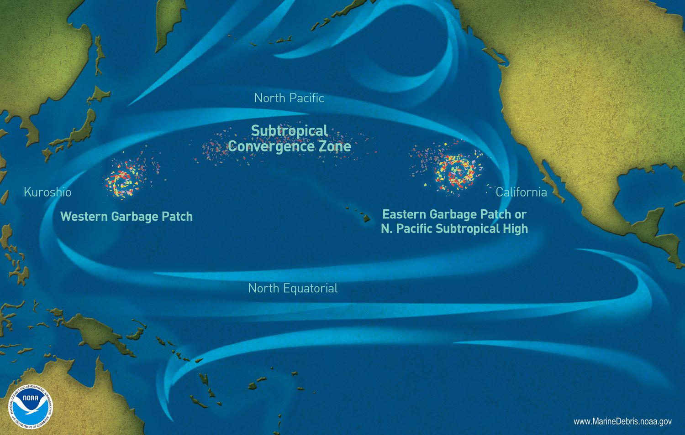
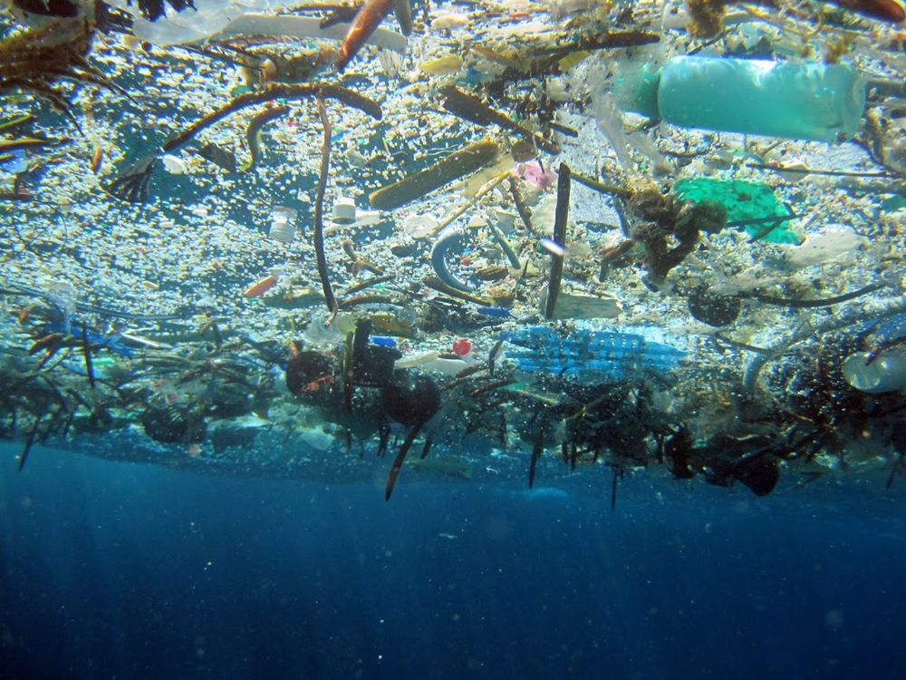
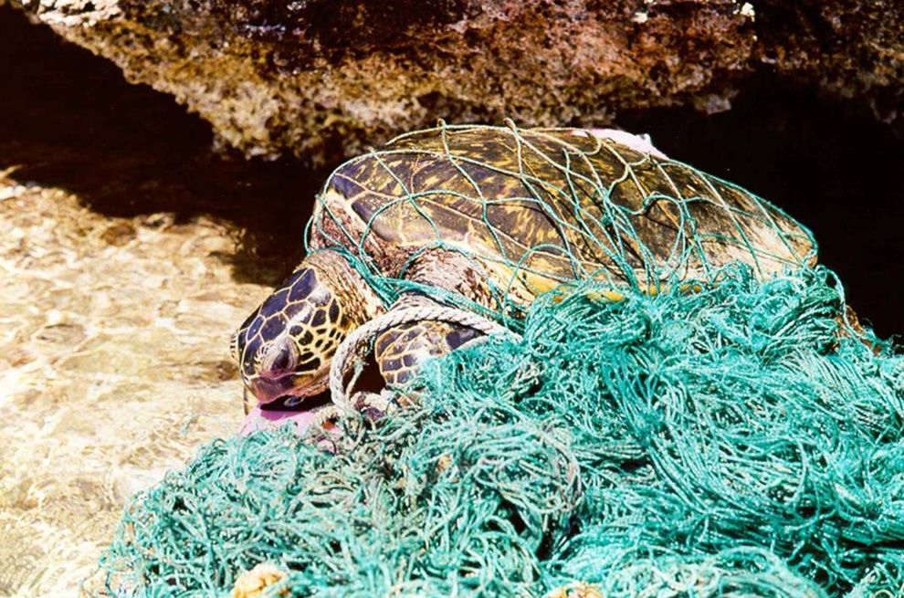
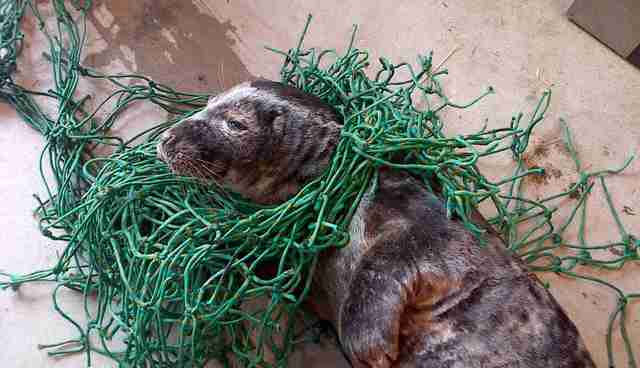

The Pacific Ocean
Human Impact
The Great Pacific Garbage Patch

The Great Pacific Garbage Patch, also known as the Pacific trash vortex, is a collection of marine debris (trash or other non-ocean-deriving materials) in the North Pacific Ocean.
The Great Pacific Garbage Patch spans waters from the West Coast of North America to Japan. The patch is actually comprised of two piles that circulate the marine debirs. The Western Garbage Patch is located near Japan, while the Eastern Garbage Patch is located between the U.S. states of Hawaii and California.
These areas of spinning debris are linked together by the North Pacific Subtropical Convergence Zone, located a few hundred kilometers north of Hawaii. This convergence zone is where warm water from the South Pacific meets up with cooler water from the Arctic.

The amount of debris in the Great Pacific Garbage Patch accumulates because much of it is not biodegradable. Plastic does not biodegrade, and when it breaks into tiny pieces on its way to the ocean it becomes small enough to be swept away by the current.
For many people, the idea of a garbage patch conjures up images of an island of trash floating on the ocean. In reality, these patches are almost entirely made up of tiny bits of plastic, called microplastics. Microplastics cannot always be seen by the naked eye. Even satellite imagery doesn't show a giant patch of garbage. The microplastics of the Great Pacific Garbage Patch can simply make the water look like a cloudy soup. This soup is intermixed with larger items, such as fishing gear and shoes.
About 80 percent of the debris in the Great Pacific Garbage Patch comes from land-based activities in North America and Asia. The remaining 20 percent of debris in the Great Pacific Garbage Patch comes from boaters, offshore oil rigs, and large cargo ships that dump or lose debris directly into the water. The majority of this debris, about 705,000 tons, is fishing nets. More unusual items, such as computer monitors and LEGOs, come from dropped shipping containers.
In the ocean, the sun breaks down these plastics into tinier and tinier pieces, a process known as photodegradation. Most of this debris comes from plastic bags, bottle caps, plastic water bottles, and Styrofoam cups.


Marine debris can be very harmful to marine life in the Ocean Patch. For instance, loggerhead sea turtles often mistake plastic bags for jellies, their favorite food. Seals and other marine mammals are especially at risk. They can get entangled in abandoned plastic fishing nets, which are being discarded largely due to inclement weather and illegal fishing. Seals and other mammals often drown in these forgotten nets, a phenomenon known as "ghost fishing.